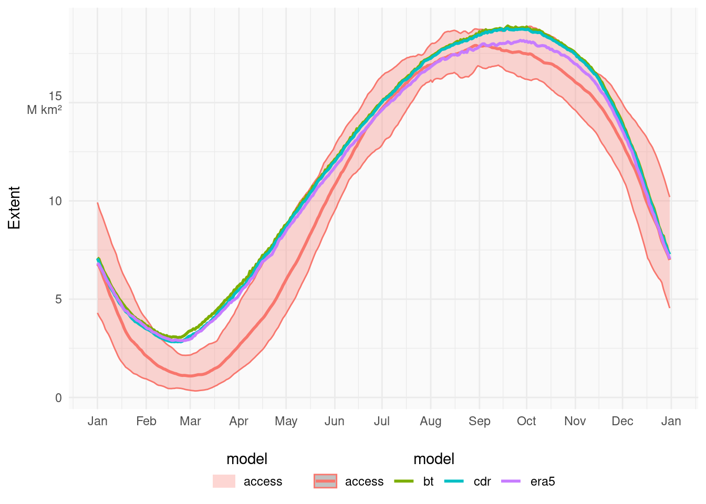
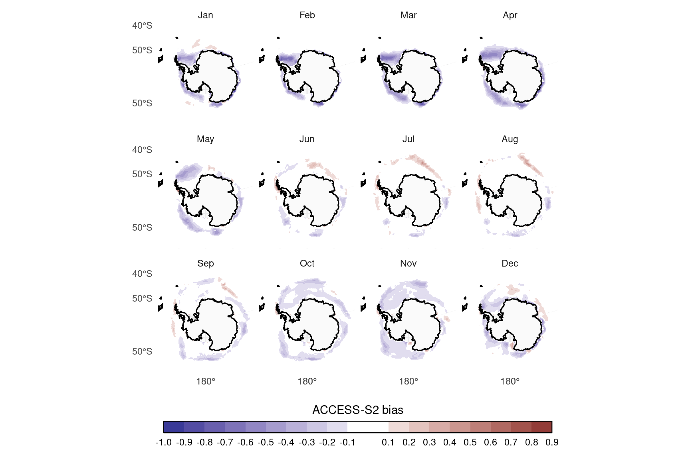
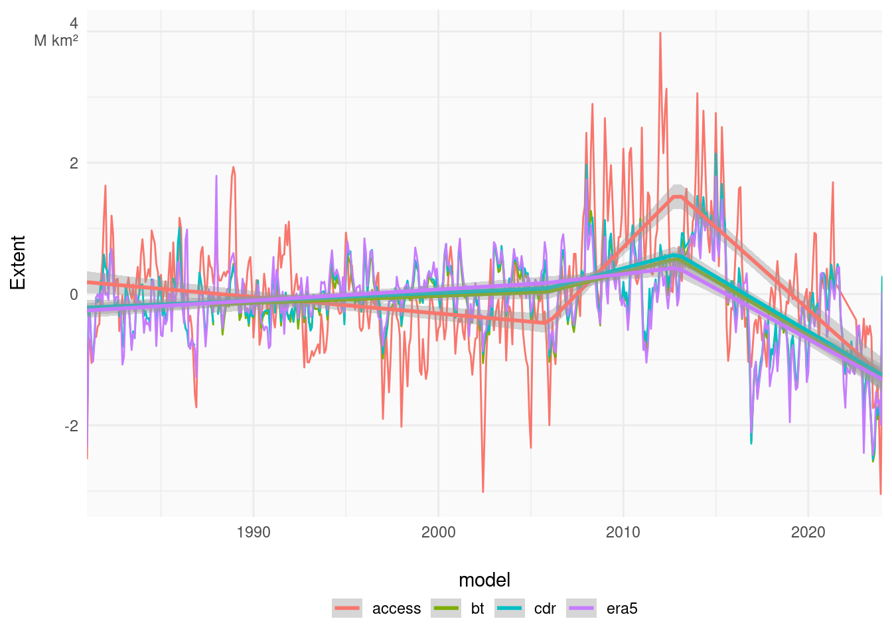
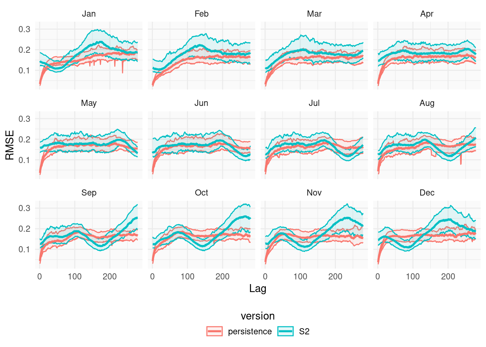

Untitled
Abstract
balbalbal
<> : Missing
Introduction
Antarctic sea ice general description. Seasonality, trends.
Importance. Impacts on life. Potential impacts on weather. Impacts on climate. Impacts on ocean circulation.(Justify why it’s important to study and understand)
Prediction systems. Why is it important: operations Discuss with Phil; science needs (we need good models). What is available. Discussion on S1 Can we discuss previous S1 results? Laura’s paper is not public.
Objective. Evaluate S2.
Data and methods
All datasets are regrided using bilinear interpolation to a common grid, which is a polar sterographic grid with approximatedly equal area of 25km².
Description of the model
ACCESS-S2 is the next seasonal prediction system after ACCESS-S1. It uses virtually the same exact model configuration except for some model versions being different. The main difference are the initial conditions. While S1 used initial conditions from the UK Met Office, S2 uses the Bureau’s own system. Description of the system Atmosphere and ocean. Highlight no ice data assimilation
For evaluation we use hindcast for the period 1981–2023Check. Anomalies will be taken with respect to the 1981–2011 climatology computed from the reanalysis.
Verification datasets
There is not a lot of data on sea ice properties, especially for things like thickness, age, etc. However there are relativelly reliable satellite-derived estimates of sea ice concentration, which esetimates the proportion of each grid area that is covered with ice. These products are not perfect and there still exists a fair bit of observation al uncertainty. To account for this uncertanty we use multiple datasets.
Bootstrap
From https://nsidc.org/data/nsidc-0079/versions/4 This sea ice concentration data set was derived using measurements from the Scanning Multichannel Microwave Radiometer (SMMR) on the Nimbus-7 satellite and from the Special Sensor Microwave/Imager (SSM/I) sensors on the Defense Meteorological Satellite Program’s (DMSP) -F8, -F11, and -F13 satellites. Measurements from the Special Sensor Microwave Imager/Sounder (SSMIS) aboard DMSP-F17 are also included. The data set has been generated using the Advanced Microwave Scanning Radiometer - Earth Observing System (AMSR-E) Bootstrap Algorithm with daily varying tie-points. Daily (every other day prior to July 1987) and monthly data are available for both the north and south polar regions. Data are gridded on the SSM/I polar stereographic grid (25 x 25 km) and provided in two-byte integer format. Data coverage began on 01 November 1978 and is ongoing through the most current processing, with updated data processed several times annually.
Comiso, J.C., Gersten, R.A. 2023. Bootstrap Sea Ice Concentrations from Nimbus-7 SMMR and DMSP SSM/I-SSMIS, Version 4. [Indicate subset used]. Boulder, Colorado USA. NASA National Snow and Ice Data Center Distributed Active Archive Center. https://doi.org/10.5067/X5LG68MH013O. [Date Accessed] Add to zotero
NASA Team
missing
CDR
NOAA/NSIDC’s Climate Data Record V4 combines the Bootstrap and NASA Team estimates in an attempt to overcome each algorithm’s weaknesses. More detail on how are they combined and their properties. As such, it is is not a trully independend dataset.
Meier, W. N., F. Fetterer, A. K. Windnagel, and S. Stewart. 2021. NOAA/NSIDC Climate Data Record of Passive Microwave Sea Ice Concentration, Version 4. [Indicate subset used]. Boulder, Colorado USA. NSIDC: National Snow and Ice Data Center https://doi.org/10.7265/efmz-2t65. [Date Accessed] Add to zotero
ERA5
From the CDS websiste: ERA5 is the fifth generation ECMWF reanalysis for the global climate and weather for the past 8 decades. Data is available from 1940 onwards. ERA5 replaces the ERA-Interim reanalysis.
This parameter is the fraction of a grid box which is covered by sea ice. Sea ice can only occur in a grid box which includes ocean or inland water according to the land-sea mask and lake cover, at the resolution being used. This parameter can be known as sea-ice (area) fraction, sea-ice concentration and more generally as sea-ice cover. In ERA5, sea-ice cover is given by two external providers. Before 1979 the HadISST2 dataset is used. From 1979 to August 2007 the OSI SAF (409a) dataset is used and from September 2007 the OSI SAF oper dataset is used. Sea ice is frozen sea water which floats on the surface of the ocean. Sea ice does not include ice which forms on land such as glaciers, icebergs and ice-sheets. It also excludes ice shelves which are anchored on land, but protrude out over the surface of the ocean. These phenomena are not modelled by the IFS. Long-term monitoring of sea ice is important for understanding climate change. Sea ice also affects shipping routes through the polar regions.
Why is ERA5 better or worse than satellites?
Error measures
FOr evaluation purposes, we use a series of measures.
Sea ice extent
Sea Ice Extent is defined as the area of ocean covered with at least 15% ice. This threshold is motivated by the limitations in satellite retrieval, which is increasingly unreliable for low sea ice conditions.
Sea Ice Extent is a rough global measure, but a model could have relatively accurate extent of ice but with different distributions. We use two other measures to account for these errors.
We compute Root Mean Square Error of sea ice concentration anomalies.
We also compute the Integrated Ice Edge Error (IIEE) CITE. This is defined as the area in which the model misspredicts the presence of more than 15% ice. That is, dichotomise sea ice concentration into areas with more and less than 15% sea ice both in the forecast and observations; the IIEE is the area in which forecast and observations differ.
Results and discussion
Reanalysis
Bias

Extent

Add reginoal extents?
Hindcast

Regional?
- Mean extent forecast <>
- Panantarctic
- Regional <>
Comparison with S1